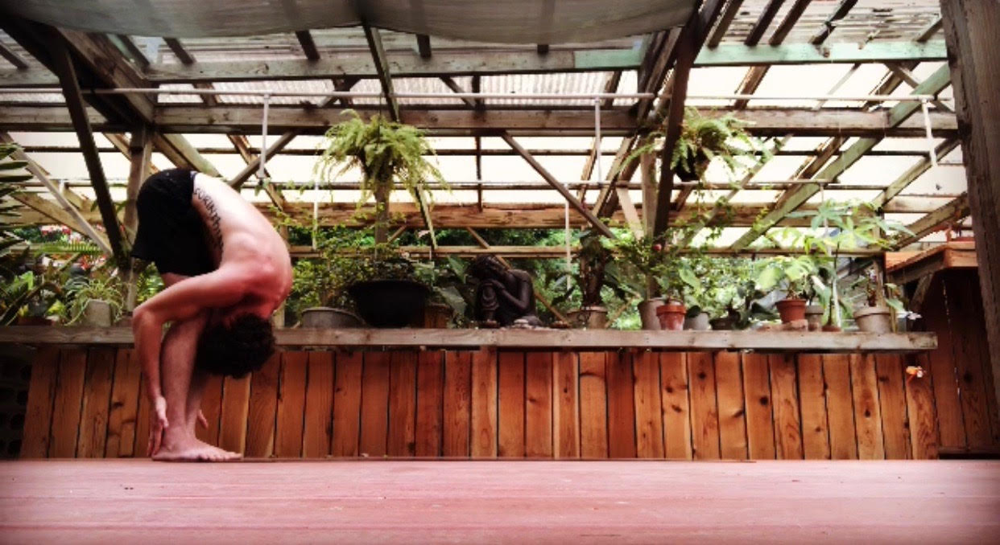
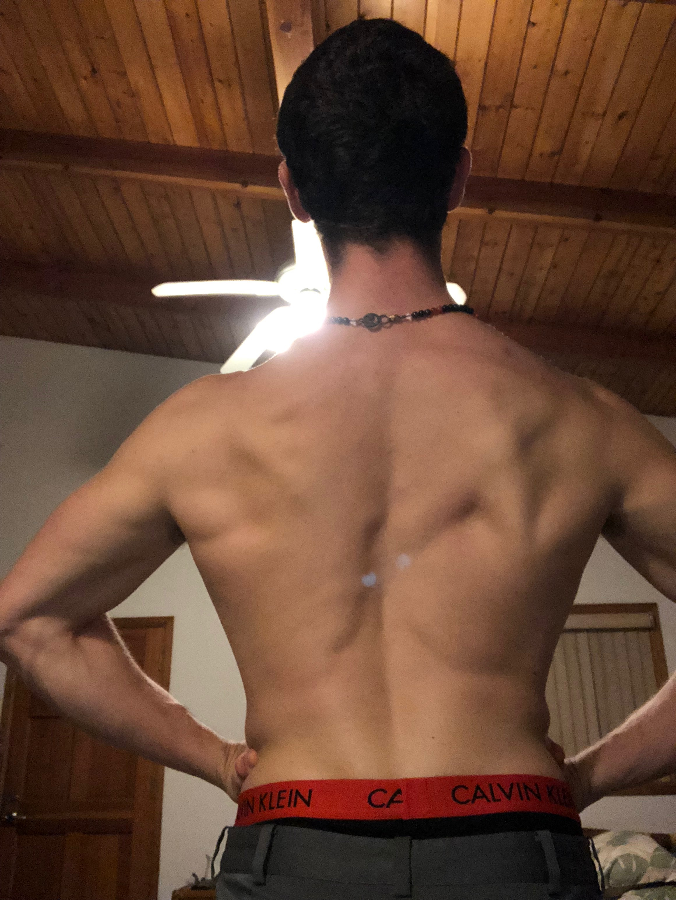
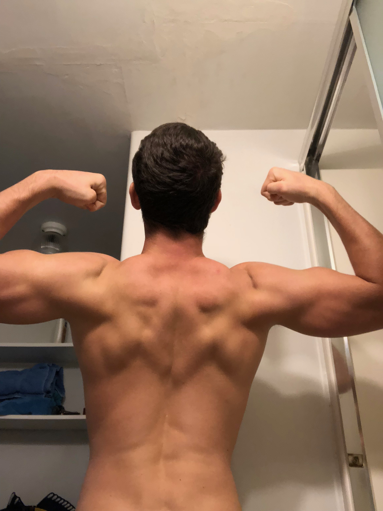
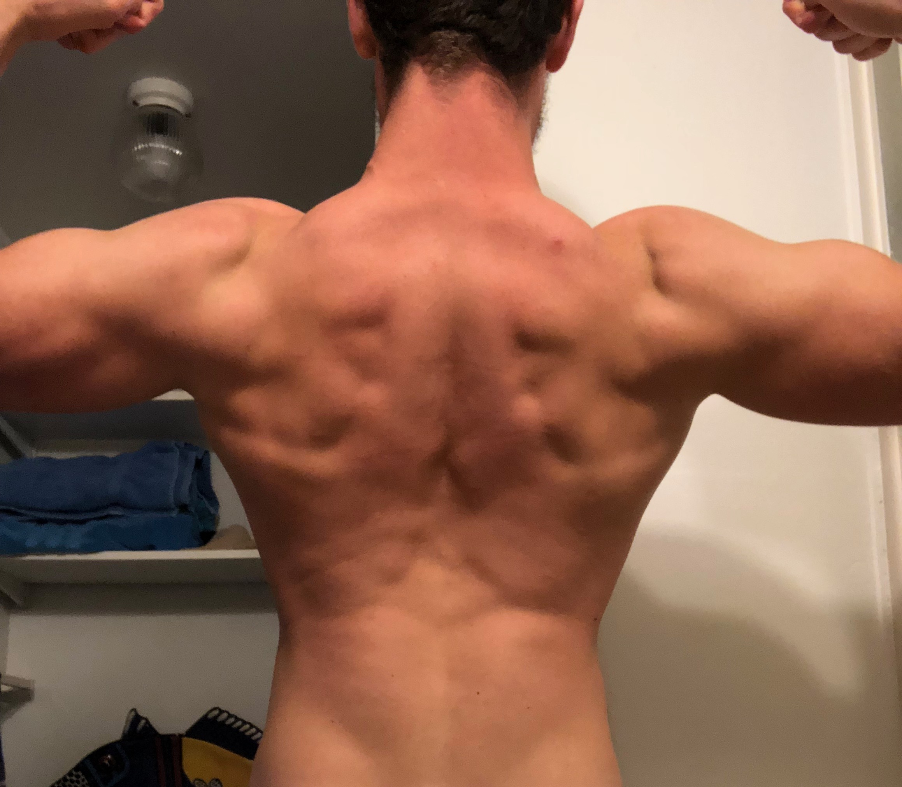

Mindset & Wellness
Stretching

You may have forgotten, which is fine. It's okay, I did too. Stretching has become somewhat similar to a lost penny that's been sitting under the cushions of your couch for the past 8 months. You may even know it is there, sitting in the back of your mind. Yet, day by day it doesn't seem to be of much importance. After all, it's just stretching right? If you are one of these people, I have a story for you. If you're ready, say I'm ready.
Before the story let's just begin with the fundamentals of body movement very briefly. There are few things people can do without the use of their muscles. The moment you open your eyes in the morning you may have already rolled over your entire body to turn off your alarm clock. It sounds so simple, but I'm grateful to know that just can't be done without the use of those voluptuous muscles, and each of us has over 650 of them! It's fantastic, right? So much to be appreciated. Each and every one of them serves a purpose in our lives, and without them we wouldn't have much of a life to live.
Personally, my life has never been the same since I began stretching on a more passionate level. I'm almost 25 years old, I've been exercising consistently for just under 10 years now, and I used to despise stretching because all I was trying to do was get big and strong. Unfortunately for me, I didn't think to use the information that was being thrown in my face while I was getting my Kinesiology degree for exercise and fitness until after the fact that I graduated from college. Stretching just seemed like it took up too much of my time. I learned my lesson the hard way.
It was because of the fact that I neglected the importance of stretching. Throughout my Kinesiology program, I suffered from scoliosis, plica syndrome (an inflammation of tissue in the knee), slouched shoulders, rhabdomyolysis (a sometimes fatal injury to the muscle to the point of killing muscle cells), a partially torn bicep, back pain, flat feet, and numerous other little annoying aches and pains. Since then, let's just say I had a change of heart, and I started to pay a little more attention to my body. Now I move better, I feel better, I can even breathe better. Amazingly too, my injuries and ailments have all seemed to have disappeared along with a noticeable shift in my energy throughout the day. It all started with a very deep foam rolling practice about a year ago.
Before considering the use of a foam roll, I used to go to the massage therapist once or twice a month to help with muscle recovery. Then, while I was at the massage center about to get a massage, I thought to myself, "Hmm.. They call it a back massage because they only massage your back when you go to the back massage therapist. It's a rare occasion that anyone gets a full body massage." And to that I said, "Isn't that interesting." So I told myself that if I can go to the massage therapist to give my back muscles attention, I wonder what would happen if I gave the other muscles in my body that kind of attention. That's when my brain reminded me what I learned in school. That day I told myself that the injuries I had been dealing with were obsolete. Peace out!
I went to Dick's Sporting Goods, and I bought a 26 Inch Trigger Point Foam Roller and The Orb Massage Therapy Ball because I knew what my best options were from school. Aside from a full body massage a few times a week (if that's in your budget), the foam roller and massage therapy ball are great ways to wake up your muscles. They both act on the muscle tissues that surround each muscle body, and by acting on it I mean breaking apart the muscle tissue to allow it to lengthen and stretch more. Not a day went by that if I wasn't sore I didn't roll out. I made it a commitment to myself that I would do this for my body because it deserves to have happy muscles getting lots of attention, not the sad, tight muscles that are causing all of our injuries. It's been a long road, but it was most definitely worth it.
The first two weeks were the most painful. Painful is a great coverup isn't it? Painful meaning taking your mind and your body through dark stressful situations that allow you to learn from the mental attitude you need to be able to come out an improved version of yourself afterwards. It's the same as running or lifting weights or doing yoga. I've been working at gyms for over 5 years now, and nobody, without some kind of discipline, will take the time out of their day to go to the gym and workout, let alone stretch after a good foam rolling session.
I'm telling you, my spine has aligned itself! I have pictures to show what happened after my spine cracked in about 8 different places and realigned itself after I foam rolled and did a little toe touch.



After every foam rolling session I spend more time doing long-hold static stretches on every muscle group that I roll out. I learned through stretching and foam rolling the way to breathe deeply into each stretch and roll, and I learned how to breathe even deeper when I started doing yoga. I started with only a few very basic poses, which has now led me to a yoga studio where I have just about loosened my body up to the point where I don't even get sick anymore (unless I eat poorly). My energy levels are higher, and my range of motion is enough to pull my body into better posture and a better attitude. The mind-body connection is very much real when you feel happy to say you did something for yourself today.